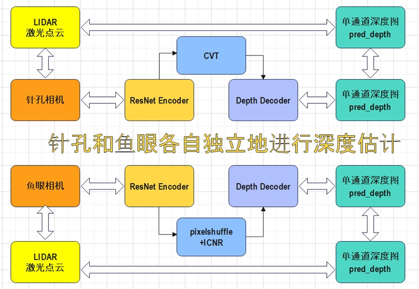
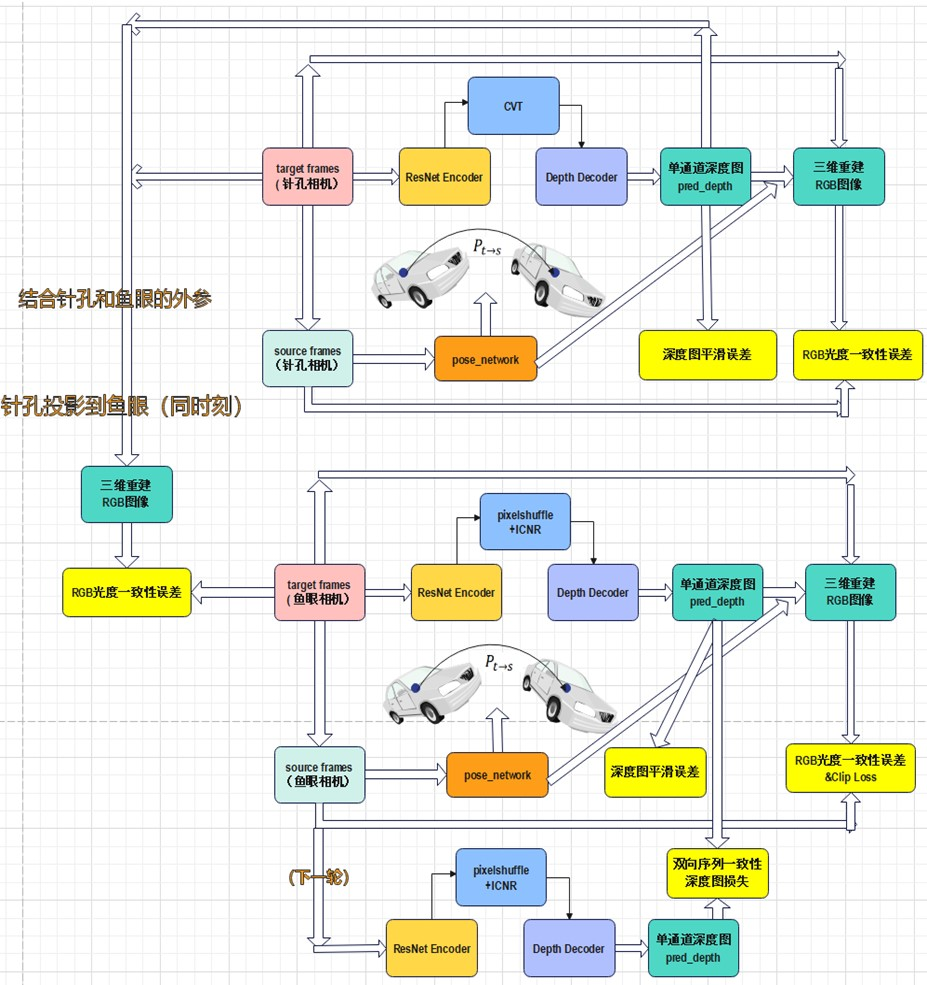

We have referenced the paper: SurroundDepth: Entangling Surrounding Views for Self-Supervised Multi-Camera Depth Estimation
The following videos are only a portion of original videos, and may take some time to display,
Check full videos online at Google Drive
'CAM_FRONT'
'CAM_FRONT_LEFT'
'CAM_FRONT_LEFT'
'CAM_FRONT'
'CAM_FRONT_LEFT'
'CAM_FRONT_LEFT'
Note: There is an error in camera calibration of CAMERA_FRONT, so we only use 5 cameras for depth estimation
The following videos may take some time to display, check them online at Google Drive
'CAM_FRONT_LEFT'
'CAM_BACK_LEFT'
'CAM_BACK'
'CAM_BACK_RIGHT'
'CAM_FRONT_RIGHT'
A self-supervised two-step heterogeneous camera depth estimation method
The comprehensive implementation details can be found in An end-to-end two-stage heterogeneous depth estimation method by combining fisheye and pinhole cameras.
Notice:
1) Setup Requirement: Equipped with 1 Pinhole Camera and 1 Fisheye Camera with same orientation (e.g. CAM_FRONT)
2) For step2, we project pinhole to fisheye as the latter normally has larger view
3) To preserve its wide-angle characteristic, no calibration has been made to correct fisheye camera's distortion, instead we enocde the fisheye model directly
Step 1
Step 2
